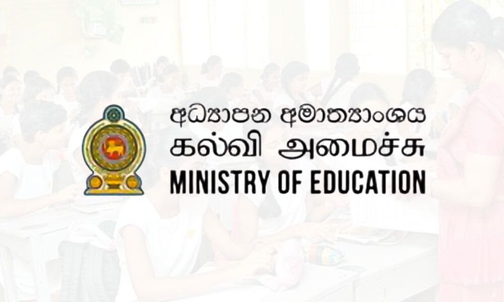

අද්යාපන අමාත්යඅංශය යටතේ නඩත්තුවන මෙම වෙබ් අඩවියේ අරමුණ වන්නේ දැයේ දූපුතුන්ගේ ප්රතිපල ඉහල නැන්වීමඅරමුන කොටගෙන වන අතර මෙමගින් ඉදිරි විභහග වලයට යොමුවනු ඇතැයි අද්යාපන දෙපාර්ත්මේන්තුව විසින් ඇස්තමේන්තුකොට ඇති 100%ක් සත්ය තොරතුරු හා දත්ත මත පදමනම්ව නිමවු 100% අනුමාන ආදර්ශ ප්රශ්නපත්ර වලින් සමන්විත වෙබඩවියකි.(මෙම වෙබ් අඩවිය කිසිදු අනීතික කටයුතු සදහා යොදා නොගන්න )